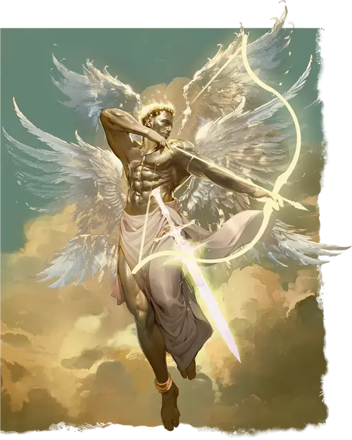

Солар
Solar
Большой Небожитель (Ангел), Принципиальный Добрый

Класс Защиты 21 Инициатива +20 (30)
Хиты 297 (22к10 + 176)
Скорость 50 футов, Полёта 150 футов (парит)
| мод | спас | ||
|---|---|---|---|
| СИЛ | 26 | +8 | +8 |
| ЛОВ | 22 | +6 | +6 |
| ТЕЛ | 26 | +8 | +8 |
| мод | спас | ||
|---|---|---|---|
| ИНТ | 25 | +7 | +7 |
| МДР | 25 | +7 | +7 |
| ХАР | 30 | +10 | +10 |
Иммунитеты Излучение, Яд; Испуганный, Истощение, Отравленный, Очарованный
Чувства пассивное Восприятие 24, Истинное зрение 120 футов
Языки Все, Телепатия 120 фт.
Опасность 21 (33 000 опыта; БВ +7)
Особенности
Божественная осведомлённость. Солар всегда понимает, слышит ли он ложь.
Восстановление возвышенного. Когда солар умирает за пределами Горы Целестия, его тело исчезает и в тот же миг заново возрождается со всеми Хитами где-то на горе Целестия.
Легендарное сопротивление (4/день). Если солар проваливает спасбросок, он вместо этого может в нём преуспеть.
Сопротивление магии. Солар совершает с Преимуществом спасброски от заклинаний и прочих магических эффектов.
Действия
Мультиатака. Солар совершает две атаки Летающим мечом. Он может заменить одну из этих атак использованием Лука истребления.
Летающий меч. Бросок рукопашной или дальнобойной атаки: +15, досягаемость 10 фт. или дистанция 120 фт. Попадание: 22 (4к6 + 8) Рубящего урона плюс 36 (8к8) урона Излучением. Промах или попадание: Меч магическим образом возвращается в руку солара или в парящее положение в пределах 5 футов от солара сразу после совершения дальнобойной атаки.
Лук истребления. Спасбросок Ловкости: Сл 21, одно видимое соларом существо в 600 футах. Провал: Если у существа 100 Хитов или меньше, оно умирает; иначе оно получает 24 (4к8 + 6) Колющего урона плюс 36 (8к8) урона Излучением.
Сотворение заклинаний. Солар сотворяет одно из следующих заклинаний, не нуждаясь в Материальных компонентах (заклинательная характеристика — Харизма, Сл спасброска заклинаний 25):
Неограниченно: Обнаружение добра и зла
1/день каждое: Власть над погодой, Воскрешение, Общение, Рассеивание зла и добра
Бонусные действия
Божественная подмога (3/день). Солар сотворяет заклинания Лечение ран (версия 2-го уровня), Малое восстановление или Снятие проклятия (заклинательная характеристика — та же, что для Сотворения заклинаний).
Легендарные действия
У этого существа есть 3 использования Легендарных действий; оно может немедленно после окончания хода другого существа потратить одно использование, чтобы совершить одно из следующих действий. Существо восполняет все потраченные использования в начале каждого своего хода.
Ослепительный взор. Спасбросок Телосложения: Сл 25, одно видимое соларом существо в 120 футах. Провал: Цель Ослеплена на 1 минуту. Провал или успех: Солар не может совершить это действие повторно до начала своего следующего хода.
Сияющий телепорт. Солар телепортируется в видимое им незанятое пространство на расстояние вплоть 60 футов. Спасбросок Ловкости: Сл 25, каждое существо в 10-футовой Эманации, исходящей от солара в точке назначения. Провал: 11 (2к10) урона Излучением. Успех: Только половина урона.
Бонус мастерства +7
Среда обитания Верхние планы
Сокровища Любые
Солар
Ангельский защитник мультивселенной
Солары — последний рубеж защиты между невыразимым злом и порядком мультивселенной. Они служат праведным божествам и извечным силам добра. Их интересы простираются на все планы, но они редко вмешиваются в конфликты на мирах Материального плана. Когда же они действуют, то возглавляют огромные ангельские воинства и владеют святым оружием, способным повергнуть злейших исчадий.
Солары могут воскрешать мёртвых и часто используют эту силу, чтобы привлечь помощь смертных. Тем, кого они возвращают к жизни, они даруют великие, новые цели. Солары не принуждают следовать этим судьбам, но верят в способность смертных достигать великих свершений.